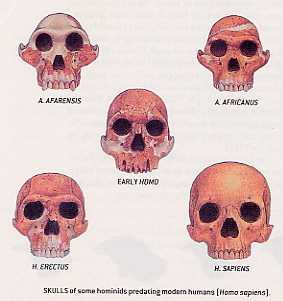

|
"An interview of Dr. Humayun Azad" |
||||
|
Ref: http://groups.yahoo.com/group/mukto-mona/message/8753 A handful of academics with church leaning had attacked Darwin’s theory of evolution claiming that a complicated structure such as bacterium’s flagella (spinning tail) cannot evolve. Similarly, human eyes with its complex and specialized cells and tissue including lens cannot evolve naturally. In other words, these things have evolved because of the divine intervention. Their pet theory is called “Intelligent Design.” These charlatan academics and their naïve partners—church authorities—have been in a slugfest over the issue of Darwinian evolution. They realize that with the recent development of genomics study, more and more supports are coming out in with an accelerated pace in favor of Darwinian theory of evolution. To combat the intrusion of scientific theory of evolution in the classroom, these challengers of Darwinism have come up with a dozen or so questions. They frequently pose these questions only to confuse a layman and other persons who are not trained in the field. The ordinary human beings have great difficulty grasping Darwin’s theory of ‘Natural Selection.’ Also, the great length of time—sometimes millions of years—that is required for the evolution of more complex organisms is not helping the cause of understanding the scientific theory of evolution by laymen. Thus, the Church and Muslim clergies are giving a simplified version of “Creationism” as an alternative theory of evolution. However, in the West, the school authorities are not buying the Churches' teachings. Therefore, the cunning Church authorities have formed an alliance with some academics in the US to come up with an alternative theory of evolution. They are calling this theory an “Intelligent Design.” The basic premise of the “Intelligent Design” theory of evolution is that natural selection cannot or will not come up with a complex structure such as bacterial flagella, heart muscle, eye, etc., therefore, an intelligent designer has to make these things. This fits very well with the dogma of Churches and other monotheistic religion. In Hinduism also, there is this powerful Brahma whose job is to make living and non-living things. This simplistic notion could satisfy very easily many people who will have hard time grasping the complexity of Darwin’s scientific theory of evolution. A case in point is the complexities of protein structure. Although proteins are known to exist in organism over hundred years or so, but theirs three-dimensional structure is only known for the last 50 years or so. These are linear chains of amino acids, but they fold in a unique way to give the active structure. Protein chemists say that the pattern of folding is inherent in the sequence. If a protein misfolds, then it won’t work. Many mutations in hemoglobin, which is a blood protein, will lead to deformed protein because their structures are not going to be far from being ideal. How would the proponent of an “Intelligent Design” theory explain the anomalies in protein structure? The naturalist would say that mutation is a normal phenomenon for producing variabilities, which is the lifeblood of evolution. Had there been no mutation, a cyanobacteria or any primitive single-celled organism would be the only living things present in our world. It would take eons for 'Intelligent Designer' (read God) to come up with the designs of tens and thousands of proteins that make up a single human cells. The Mother nature came up with these proteins by trials and errors over millions of years. The proponents of the ‘Intelligent Design’ theory take example readily from an old fashion watch, which is precision engineered manmade thing. They opine that man could have only evolved from an “Intelligent Design” done by you know who that is. In nature spontaneous or self-assembly could take place and result in very complex structure. I have viewed many of those structures that scientists have elucidated in recent times. The awesome beauty of protein molecules as rendered by X-ray crystallography or NMR spectroscopy can easily seen in a computer screen by visiting the Cn3D page of National Center for Biotechnology Information (NCBI) - http://www.ncbi.nlm.nih.gov/Structure/CN3D/cn3d.shtml. One first has to download the free visualization software Cn3D. For a starter one could write hemoglobin as the molecule in the query line. Recently, I found the writings
of John Rennie, the editor in-chief of Scientific American on the issue of
misleading propaganda by the proponent of “Intelligent Design” theory.
Mr. Rennie took the onus on him to rebut 15 common questions that are being
raised by the proponent of “Intelligent Design” theorists. I would
request any readers who are interested in this subject to go through Mr.
Rennie’s article, which I am posting down below. The editor in-chief
of Scientific American has done a wonderful job of explaining how wrong those
academic charlatans are to create confusion among rational people. They
desperately wanted to include in the high school textbooks some flawed ideas
about evolution, which have no scientific merits at all. With this, I
rest my case.
When Charles Darwin introduced the theory of evolution 143 years ago, the scientists of the day argued over it fiercely, but the massing evidence from paleontology, genetics, zoology, molecular biology and other fields gradually established evolution's truth beyond reasonable doubt. Today that battle has been won everywhere-except in the public imagination. Embarrassingly, in the 21st
century, in the most scientifically advanced nation the world has ever known,
creationists can still persuade politicians, judges and ordinary citizens that
evolution is a flawed, poorly supported fantasy. They lobby for creationist
ideas such as "intelligent design" to be taught as alternatives to
evolution in science classrooms. As this article goes to press, the Ohio
Board of Education is debating whether to mandate such a change. Some
antievolutionists, such as Philip E. Johnson, a law professor at the
University of California at Berkeley and author of Darwin on Trial,
admit that they intend for intelligent-design theory to Besieged teachers and others may increasingly find themselves on the spot to defend evolution and refute creationism. The arguments that creationists use are typically specious and based on misunderstandings of (or outright lies about) evolution, but the number and diversity of the objections can put even well-informed people at a disadvantage. To help with answering them, the, following list rebuts some of the most common; "scientific" arguments raised against evolution. It also directs readers to further sources for information and explains why creation science has no place in the classroom.
1. Evolution is only a theory. It is not a fact or a scientific law. Many people learned in elementary school that a theory falls in the middle of a hierarchy of certainty—above a mere hypothesis but below a law. Scientists do not use the terms that way, however. According to the National Academy of Sciences (NAS), a scientific theory is "a well-substantiated explanation of some aspect of the natural world that can incorporate facts, laws, inferences, and tested hypotheses." No amount of validation changes a theory into a law, which is a descriptive generalization about nature. So when scientists talk about the theory of evolution—or the atomic theory or the theory of relativity, for that matter—they are not expressing reservations about its truth. In addition to the theory of evolution, meaning the idea of descent with modification, one may also speak of the fact of evolution. The NAS defines a fact as "an observation that has been repeatedly confirmed and for all practical purposes is accepted as 'true'." The fossil record and abundant other evidence testify that organisms have evolved through time. Although no one observed those transformations, the indirect evidence is clear, unambiguous and compelling. All sciences frequently rely on
indirect evidence. Physicists cannot see subatomic particles directly,
for instance, so they verify their existence by watching for telltale tracks
that the particles leave in cloud chambers. The absence of direct
observation does not make physicists' conclusions less certain. 2. Natural selection is based on circular reasoning: the fittest are those who survive, and those who survive are deemed fittest. "Survival of the fittest" is a conversational way to describe natural selection, but a more technical description speaks of differential rates of survival and reproduction. That is, rather than labeling species as more or less fit, one can describe how many offspring they are likely to leave under given circumstances. Drop a fast-breeding pair of small-beaked finches and a slower-breeding pair of large-beaked finches onto an island full of food seeds. Within a few generations the fast breeders may control more of the food resources. Yet if large beaks more easily crush seeds, the advantage may tip to the slow breeders. In a pioneering study of finches on the Galapagos Islands, Peter R. Grant of Princeton University observed these kinds of population shifts in the wild [see his article "Natural Selection and Darwin's Finches"; SCIENTIFIC AMERICAN, October 1991].
The key is that adaptive fitness
can be defined without reference to survival: large beaks are better adapted
for crushing seeds, irrespective of whether that trait has survival value
under the circumstances. 3. Evolution is unscientific, because it is not testable or falsifiable. It makes claims about events that were not observed and can never be re-created. This blanket dismissal of evolution ignores important distinctions that divide the field into at least two broad areas: microevolution and macroevolution. Microevolution looks at changes within species over time—changes that may be preludes to speciation, the origin of new species. Macroevolution studies how taxonomic groups above the level of species change. Its evidence draws frequently from the fossil record and DNA comparisons to reconstruct how various organisms may be related. These days even most creationists acknowledge that microevolution has been upheld by tests in the laboratory (as in studies of cells, plants and fruit flies) and in the field (as in Grant's studies of evolving beak shapes among Galapagos finches). Natural selection and other mechanisms—such as chromosomal changes, symbiosis and hybridization—can drive profound changes in populations over time. The historical nature of macroevolutionary study involves inference from fossils and DNA rather than direct observation. Yet in the historical sciences (which include astronomy, geology and archaeology, as well as evolutionary biology), hypotheses can still be tested by checking whether they accord with physical evidence and whether they lead to verifiable predictions about future discoveries. For instance, evolution implies that between the earliest-known ancestors of humans (roughly five million years old) and the appearance of anatomically modern humans (about 100,000 years ago), one should find a succession of hominid creatures with features progressively less apelike and more modern, which is indeed what the fossil record shows. But one should not — and does not — find modern human fossils embedded in strata from the Jurassic period (65 million years ago). Evolutionary biology routinely makes predictions far more refined and precise than this, and researchers test them constantly. Evolution could be disproved in other ways, too. If we could document the spontaneous generation of just one complex life-form from inanimate matter, then at least a few creatures seen in the fossil record might have originated this way. If superintelligent aliens appeared and claimed credit for creating life on earth (or even particular species), the purely evolutionary explanation would be cast in doubt. But no one has yet produced such evidence. It should be noted that the idea of falsifiability as the defining characteristic of science originated with philosopher Karl Popper in the 1930s. More recent elaborations on his thinking have expanded the narrowest interpretation of his principle precisely because it would eliminate too many branches of clearly scientific endeavor.  4. Increasingly, scientists doubt the truth of evolution. No evidence suggests that evolution is losing adherents. Pick up any issue of a peer-reviewed biological journal, and you will find articles that support and extend evolutionary studies or that embrace evolution as a fundamental concept. Conversely, serious scientific publications disputing evolution are all but nonexistent. In the mid-1990s George W. Gilchrist of the University of Washington surveyed thousands of journals in the primary literature, seeking articles on intelligent design or creation science. Among those hundreds of thousands of scientific reports, he found none. In the past two years, surveys done independently by Barbara Forrest of Southeastern Louisiana University and Lawrence M. Krauss of Case Western Reserve University have been similarly fruitless. Creationists retort that a
closed-minded scientific community rejects their evidence. Yet according
to the editors of Nature, Science and other leading journals, few
antievolution manuscripts are even submitted. Some antievolution authors
have published papers in serious journals. Those papers, however, rarely
attack evolution directly or advance creationist arguments; at best, they
identify certain evolutionary problems as unsolved and difficult (which no one
disputes). In short, creationists are not giving the scientific world
good reason to take them seriously. 5. The disagreements among even evolutionary biologists show how little solid science supports evolution. Evolutionary biologists passionately debate diverse topics: how speciation happens, the rates of evolutionary change, the ancestral relationships of birds and dinosaurs, whether Neandertals were a species apart from modern humans, and much more. These disputes are like those found in all other branches of science. Acceptance of evolution as a factual occurrence and a guiding principle is nonetheless universal in biology. Unfortunately, dishonest creationists have shown a willingness to take scientists' comments out of context to exaggerate and distort the disagreements. Anyone acquainted with the works of paleontologist Stephen Jay Gould of Harvard University knows that in addition to co-authoring the punctuated-equilibrium model, Gould was one of the most eloquent defenders and articulators of evolution. (Punctuated equilibrium explains patterns in the fossil record by suggesting that most evolutionary changes occur within geologically brief intervals—which may nonetheless amount to hundreds of generations.) Yet creationists delight in dissecting out phrases from Gould's voluminous prose to make him sound as though he had doubted evolution, and they present punctuated equilibrium as though it allows new species to materialize overnight or birds to be born from reptile eggs. When confronted with a quotation
from a scientific authority that seems to question evolution, insist on seeing
the statement in context. Almost invariably, the attack on evolution
will prove illusory. 6. If humans descended from monkegs, why are there still monkegs? This surprisingly common
argument reflects several levels of ignorance about evolution. The first
mistake is that evolution does not teach that humans descended from monkeys;
it states that both have a common ancestor. The deeper error is that
this objection is tantamount to asking, "If children descended from
adults, why are there still adults?" New species evolve by
splintering off from established ones, when populations of organisms become
isolated from the main branch of their family and acquire sufficient
differences to remain forever distinct. The parent species may survive
indefinitely thereafter, or it may become extinct. 7. Evolution cannot explain how life first appeared on earth. The origin of life remains very much a mystery, but biochemists have learned about how primitive nucleic acids, amino acids and other building blocks of life could have formed and organized themselves into self-replicating, self-sustaining units, laying the foundation for cellular biochemistry. Astrochemical analyses hint that quantities of these compounds might have originated in space and fallen to earth in comets, a scenario that may solve the problem of how those constituents arose under the conditions that prevailed when our planet was young. Creationists sometimes try to
invalidate all of evolution by pointing to science's current inability to
explain the origin of life. But even if life on earth turned out to have
a nonevolutionary origin (for instance, if aliens introduced the first cells
billions of years ago), evolution since then would be robustly confirmed by
countless microevolutionary and macroevolutionary studies. 8. Mathematically, it is inconceivable that anything as complex as a protein, let alone a living cell or a human, could spring up by chance. Chance plays a part in evolution (for example, in the random mutations that can give rise to new traits), but evolution does not depend on chance to create organisms, proteins or other entities. Quite the opposite: natural selection, the principal known mechanism of evolution, harnesses nonrandom change by preserving "desirable" (adaptive) features and eliminating "undesirable" (non-adaptive) ones. As long as the forces of selection stay constant, natural selection can push evolution in one direction and produce sophisticated structures in surprisingly short times.
9. The Second Law of Thermodynamics says that systems must become more disordered overtime. Living cells therefore could not have evolved from inanimate chemicals, and multicellular life could not have evolved from protozoa. This argument derives from a misunderstanding of the Second Law. If it were valid, mineral crystals and snow-flakes would also be impossible, because they, too, are complex structures that form spontaneously from disordered parts. The Second Law actually states
that the total entropy of a closed system (one that no energy or matter leaves
or enters) cannot decrease. Entropy is a physical concept often casually
described as disorder, but it differs significantly from the conversational
use of the word. More important, however, the Second Law permits parts
of a system to decrease in entropy as long as other parts experience an
offsetting increase. Thus, our planet as a whole can grow more complex
because the sun pours heat and light onto it, and the greater entropy
associated with the sun's nuclear fusion more than rebalances the scales.
Simple organisms can fuel their rise toward complexity by consuming other
forms of life and nonliving materials. 10. Mutations are essential to evolution theory, but mutations can only eliminate traits. They cannot produce new features. On the contrary, biology has catalogued many traits produced by point mutations (changes at precise positions in an organism's DNA) — bacterial resistance to antibiotics, for example. Mutations that arise in the homeobox (Hox) family of development-regulating genes in animals can also have complex effects. Hox genes direct where legs, wings, antennae and body segments should grow. In fruit flies, for instance, the mutation called Antennapedia causes legs to sprout where antennae should grow. These abnormal limbs are not functional, but their existence demonstrates that genetic mistakes can produce complex structures, which natural selection can then test for possible uses. Moreover, molecular biology has discovered mechanisms for genetic change that go beyond point mutations, and these expand the ways in which new traits can appear. Functional modules within genes can be spliced together in novel ways. Whole genes can be accidentally duplicated in an organism's DNA, and the duplicates are free to mutate into genes for new, complex features. Comparisons of the DNA from a wide variety of organisms indicate that this is how the globin family of blood proteins evolved over millions of years. 11. Natural selection might explain microevolution, but it cannot explain the origin of new species and higher orders of life. Evolutionary biologists have written extensively about how natural selection could produce new species. For instance, in the model called allopatry, developed by Ernst Mayr of Harvard University, if a population of organisms were isolated from the rest of its species by geographical boundaries, it might be subjected to different selective pressures. Changes would accumulate in the isolated population. If those changes became so significant that the splinter group could not or routinely would not breed with the original stock, then the splinter group would be reproductively isolated and on its way toward becoming a new species. Natural selection is the best studied of the evolutionary mechanisms, but biologists are open to other possibilities as well. Biologists are constantly assessing the potential of unusual genetic mechanisms for causing speciation or for producing complex features in organisms. Lynn Margulis of the University of Massachusetts at Amherst and others have persuasively argued that some cellular organelles, such as the energy-generating mitochondria, evolved through the symbiotic merger of ancient organisms. Thus, science welcomes the possibility of evolution resulting from forces beyond natural selection. Yet those forces must be natural; they cannot be attributed to the actions of mysterious creative intelligences whose existence, in scientific terms, is unproved. 12. Nobody has overseen a new species evolve. Speciation is probably fairly rare and in many cases might take centuries. Furthermore, recognizing a new species during a formative stage can be difficult, because biologists sometimes disagree about how best to define a species. The most widely used definition, Mayr's Biological Species Concept, recognizes a species as a distinct community of reproductively isolated populations—sets of organisms that normally do not or cannot breed outside their community. In practice, this standard can be difficult to apply to organisms isolated by distance or terrain or to plants (and, of course, fossils do not breed). Biologists therefore usually use organisms' physical and behavioral traits as clues to their species membership. Nevertheless, the scientific
literature does contain reports of apparent speciation events in plants,
insects and worms. In most of these experiments, researchers subjected
organisms to various types of selection—for anatomical differences, mating
behaviors, habitat preferences and other traits—and found that they had
created populations of organisms that did not breed with outsiders. For
example, William R. Rice of the University of New Mexico and George W. Salt of
the University of California at Davis demonstrated that if they sorted a group
of fruit flies by their preference for certain environments and bred those
flies separately over 35 generations, the resulting flies would refuse to
breed with those from a very different environment. 13. Evolutionists cannot point to any transitional fossils—creatures that are half reptile and half bird, for instance. Actually, paleontologists know of many detailed examples of fossils intermediate inform between various taxonomic groups. One of the most famous fossils of all time is Archaeopteryx, which combines feathers and skeletal structures peculiar to birds with features of dinosaurs. A flock's worth of other feathered fossil species, some more avian and some less, has also been found. A sequence of fossils spans the evolution of modern horses from the tiny Eohippus. Whales had four-legged ancestors that walked on land, and creatures known as Ambulocetus and Rodhocetus helped to make that transition [see "The Mammals That Conquered the Seas," by Kate Wong; SCIENTIFIC AMERICAN, May]. Fossil seashells trace the evolution of various mollusks through millions of years. Perhaps 20 or more hominids (not all of them our ancestors) fill the gap between Lucy the australopithecine and modern humans. Creationists, though, dismiss these fossil studies. They argue that Archaeopteryx is not a missing link between reptiles and birds—it is just an extinct bird with reptilian features. They want evolutionists to produce a weird, chimeric monster that cannot be classified as belonging to any known group. Even if a creationist does accept a fossil as transitional between two species, he or she may then insist on seeing other fossils intermediate between it and the first two. These frustrating requests can proceed ad infinitum and place an unreasonable burden on the always incomplete fossil record. Nevertheless,
evolutionists can cite further supportive evidence from molecular biology.
All organisms share most of the same genes, but as evolution predicts, the
structures of these genes and their products diverge among species, in keeping
with their evolutionary relationships. Geneticists speak of the "molecular
clock" that records the passage of time.
These molecular data also show how various organisms are transitional within
evolution. 14. Living things have fantastically intricate features—at the anatomical, cellular and molecular levels—that could not function if they were any less complex or sophisticated. The only prudent conclusion is that they are the products of intelligent design, not evolution. This "argument from design" is the backbone of most recent attacks on evolution, but it is also one of the oldest. In 1802, theologian William Paley wrote that if one finds a pocket watch in a field, the most reasonable conclusion is that someone dropped it, not that natural forces created it there. By analogy, Paley argued, the complex structures of living things must be the handiwork of direct, divine invention. Darwin wrote On the Origin of Species as an answer to Paley: he explained how natural forces of selection, acting on inherited features, could gradually shape the evolution of ornate organic structures.
Generations of creationists have tried to counter Darwin by citing the example of the eye as a structure that could not have evolved. The eye's ability to provide vision depends on the perfect arrangement of its parts, these critics say. Natural selection could thus never favor the transitional forms needed during the eye's evolution—what good is half an eye? Anticipating this criticism, Darwin suggested that even "incomplete" eyes might confer benefits (such as helping creatures orient toward light) and thereby survive for further evolutionary refinement. Biology has vindicated Darwin: researchers have identified primitive eyes and light-sensing organs throughout the animal kingdom and have even tracked the evolutionary history of eyes through comparative genetics. (It now appears that in various families of organisms, eyes have evolyed independently.) Today's intelligent-design
advocates are more sophisticated than their predecessors, but their arguments
and goals are not fundamentally different. They criticize evolution by
trying to demonstrate that it could not account for life as we know it and
then insist that the only tenable alternative is that life was designed by an
unidentified intelligence. 15. Recent discoveries prove that even at the microscopic level, life has a quality of complexity that could not have come about through evolution. "Irreducible complexity" is the battle cry of Michael J. Behe of Lehigh University, author of Darwin's Black Box: The Biochemical Challenge to Evolution. As a household example of irreducible complexity, Behe chooses the mousetrap—a machine that could not function if any of its pieces were missing and whose pieces have no value except as parts of the whole. What is true of the mousetrap, he says, is even truer of the bacterial flagellum, a whiplike cellular organelle used for propulsion that operates like an outboard motor. The proteins that make up a flagellum are uncannily arranged into motor components, a universal joint and other structures like those that a human engineer might specify. The possibility that this intricate array could have arisen through evolutionary modification is virtually nil, Behe argues, and that bespeaks intelligent design. He makes similar points about the blood's clotting mechanism and other molecular systems.
Yet evolutionary biologists have answers to these objections. First, there exist flagellae with forms simpler than the one that Behe cites, so it is not necessary for all those components to be present for a flagellum to work. The sophisticated components of this flagellum all have precedents elsewhere in nature, as described by Kenneth R. Miller of Brown University and others. In fact, the entire flagellum assembly is extremely similar to an organelle that Yersinia pestis, the bubonic plague bacterium, uses to inject toxins into cells. The key is that the flagellum's component structures, which Behe suggests have no value apart from their role in propulsion, can serve multiple functions that would have helped favor their evolution. The final evolution of the flagellum might then have involved only the novel recombination of sophisticated parts that initially evolved for other purposes. Similarly, the blood-clotting system seems to involve the modification and elaboration of proteins that were originally used in digestion, according to studies by Russell F. Doolittle of the University of California at San Diego. So some of the complexity that Behe calls proof of intelligent design is not irreducible at all. Complexity of a different kind—"specified complexity"—is the cornerstone of the intelligent-design arguments of William A. Dembski of Baylor University in his books The Design inference and No free Lunch. Essentially his argument is that living things are complex in a way that undirected, random processes could never produce. The only logical conclusion, Dembski asserts, in an echo of Paley 200 years ago, is that some superhuman intelligence created and shaped life. Dembski's argument contains several holes. It is wrong to insinuate that the field of explanations consists only of random processes or designing intelligences. Researchers into nonlinear systems and cellular automata at the Santa Fe Institute and elsewhere have demonstrated that simple, undirected processes can yield extraordinarily complex patterns. Some of the complexity seen in organisms may therefore emerge through natural phenomena that we as yet barely understand. But that is far different from saying that the complexity could not have arisen naturally. In summary, "Creation science" is a contradiction in terms. A central tenet of modem science is methodological naturalism—it seeks to explain the universe purely in terms of observed or testable natural mechanisms. Thus, physics describes the atomic nucleus with specific concepts governing matter and energy, and it tests those descriptions experimentally. Physicists introduce new particles, such as quarks, to flesh out their theories only when data show that the previous descriptions cannot adequately explain observed phenomena. The new particles do not have arbitrary properties, moreover-their definitions are tightly constrained, because the new particles must fit within the existing framework of physics. In contrast, intelligent-design theorists invoke shadowy entities that conveniently have whatever unconstrained abilities are needed to solve the mystery at hand. Rather than expanding scientific inquiry, such answers shut it down. (How does one disprove the existence of omnipotent intelligences?) Intelligent design offers few answers. For instance, when and how did a designing intelligence intervene in life's history? By creating the first DNA? The first cell? The first human? Was every species designed, or just a few early ones? Proponents of intelligent-design theory frequently decline to be pinned down on these points. They do not even make real attempts to reconcile their disparate ideas about intelligent design. Instead, they pursue argument by exclusion—that is, they belittle evolutionary explanations as farfetched or incomplete and then imply that only design-based alternatives remain. Logically, this is misleading: even if one naturalistic explanation is flawed, it does not mean that all are. Moreover, it does not make one intelligent-design theory more reasonable than another. Listeners are essentially left: to fill in the blanks for themselves, and some will undoubtedly do so by substituting their religious beliefs for scientific ideas. Time and again, science has
shown that methodological naturalism can push back ignorance, finding
increasingly detailed and informative answers to mysteries that once seemed
impenetrable: the nature of light, the causes of disease, how the brain works.
Evolution is doing the same with the riddle of how the living world took
shape. Creationism, by any name, adds nothing of intellectual value to
the effort. Other Resources for
defending Evolution How to Debate a Creationist: 25
Creationists' Arguments and 25 Evolutionists' Answers. Michael Shermer.
Skeptics Society, 1.997.
The Triumph of Evolution and the Failure of Creationism. Niles Eldredge. W. H. Freeman and Company, 2000.
summary of the scientific, philosophical and theological issues. Philip E. Johnson, Michael J. Behe and William A. Dembski make the case for intelligent design in their chapters and are rebutted by evolutionists, including Pennock, Stephen Jay Gould and Richard Dawkins.
|
||||